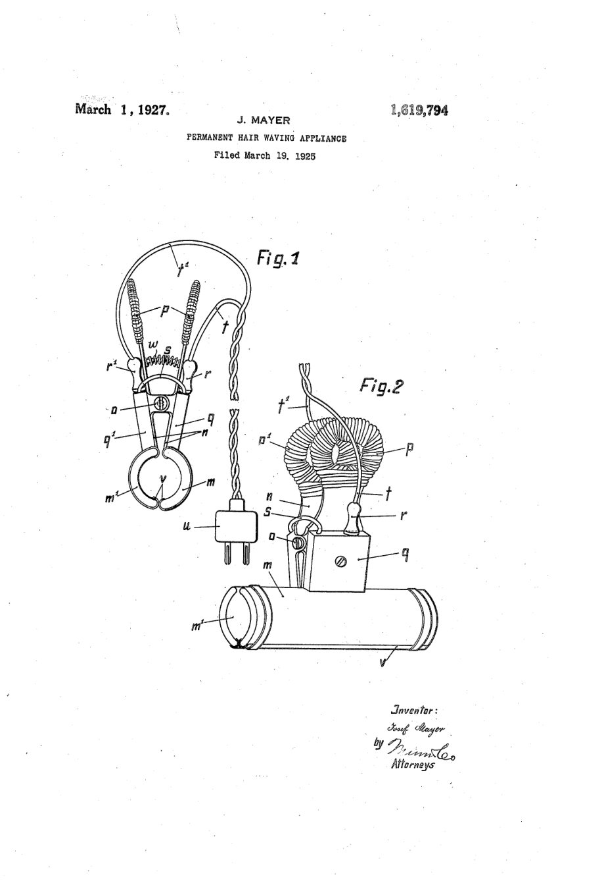
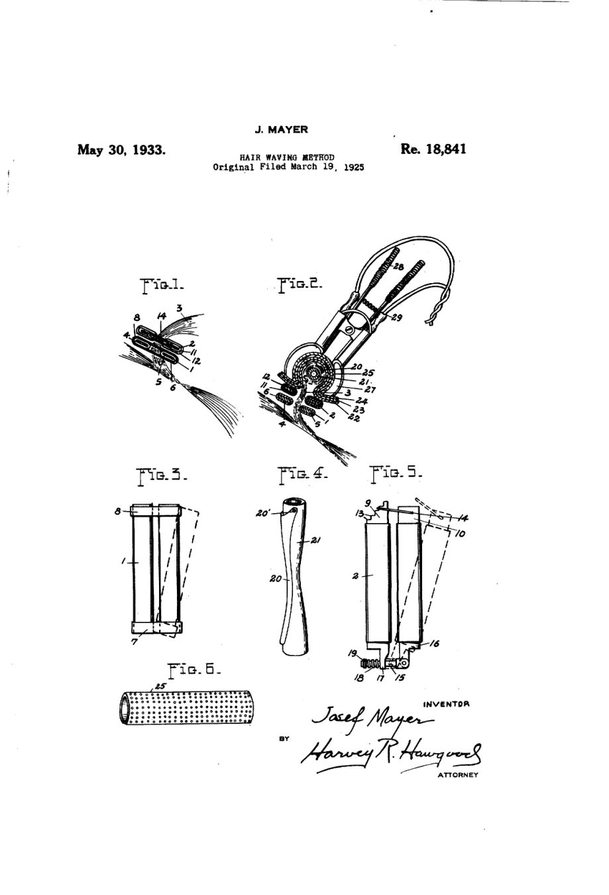
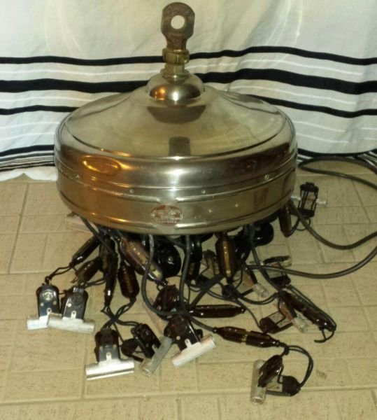
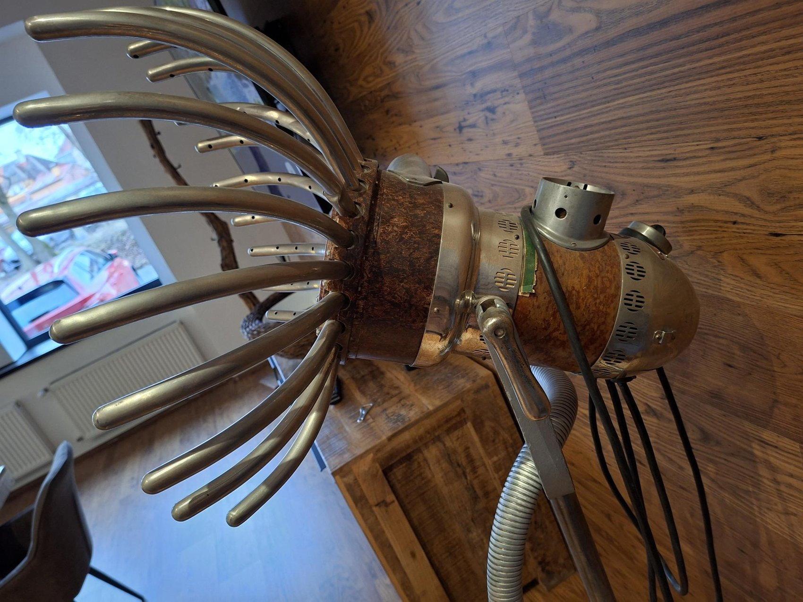
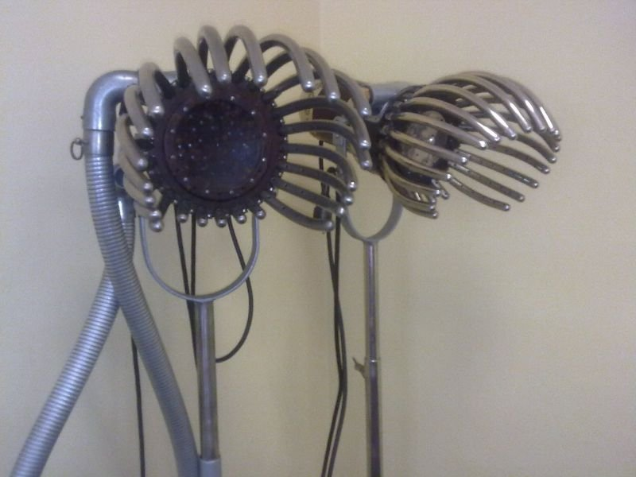
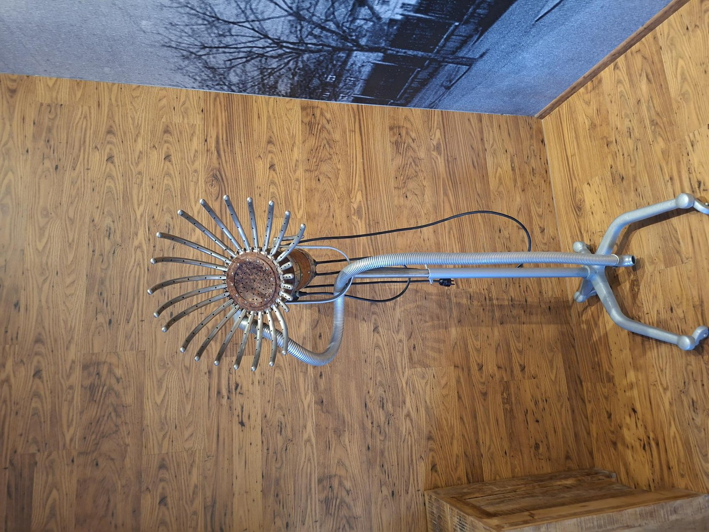

Flat winding was an important development in electrically heated permanent waving. Instead of gathering the hair into a relatively round strand and winding it helically from the roots, the alternative described in Josef Mayer's US patent documents spread the hair into a flatter strand and wound it from the free end towards the scalp. This difference affected not only the shape of the wound hair but also the way heat could be applied.
1. The problem: spiral winding and flat winding
In the older spindle-winding arrangement discussed by Mayer, a strand was wound helically from its roots around a rod. The heating sleeve could be moved over the curler along its length. In the flatter arrangement, the hair lay across the length of the curler and extended towards the scalp. This made a conventional sleeve difficult to slide into position. Mayer's 1927 patent addresses precisely that mechanical problem.


2. How the documented process worked
The following sequence summarises the historical procedure described in the 1933 reissue. It is a source-based explanation, not instructions for modern use.
- Separate a flat strand. The hair was divided into a strand with its filaments lying approximately in one plane rather than forming a round bundle.
- Secure and protect near the scalp. The document describes two clamps. One positioned the strand; the other helped prevent hot vapour reaching the scalp.
- Wind from the ends towards the roots. The strand was held by the curler and wound towards the scalp while retaining the flatter arrangement.
- Enclose the wound hair. Absorbent material and moisture-retaining protective layers surrounded the roll; the patent discusses several different materials.
- Apply the sectional heater. Two electrically heated shells closed around the covered roll. The heat acted through the coverings on the wound strand.
Historical caution: the original specifications mention electrical heating, chemicals and materials that are not appropriate as present-day salon guidance. The sequence above is descriptive only.
3. Mayer's heating appliance, patented in 1927
In Permanent-Hair-Waving Appliance, US 1,619,794, Mayer described two semi-cylindrical heated sections mounted on scissor-like handles. The sections could be opened and applied laterally over the wrapped hair. The specification also describes resistance heating, insulating handles and replaceable protective strips along the edges of the heating sections. Its three claims concern the apparatus and its components.
The US filing is dated 19 March 1925, the specification identifies a Czechoslovak application dated 3 April 1924, and the US patent was granted on 1 March 1927. These are distinct dates, not interchangeable descriptions of when the device was invented.
Read all three original pages and the complete PDF of US 1,619,794 on this website →
4. The method patent and its later legal history
Hair Waving Method, US Re. 18,841, reissued 30 May 1933, supplies a fuller account of the procedure and protective arrangement. The document identifies its original patent as US 1,622,957 (29 March 1927) and refers to an earlier reissue, Re. 17,398 (6 August 1929). The supplied copy also contains a notice that the assignee, The Philad Company, filed a disclaimer of claim 6 in May 1938. That notice is part of the source and should not be omitted from the record.
Examine all five original pages, including the 1938 disclaimer →
5. Historical Mayer Realistic equipment
The surviving photographs offer valuable material evidence of Mayer Realistic apparatus. They are not, however, a substitute for the original patent drawings: without a dated catalogue or a model identification, a photographed device cannot automatically be identified as the exact patented embodiment.




6. What the sources establish—and what remains open
Further research should compare the US patents with the cited Czechoslovak and German applications, identify individual surviving Realistic models, and study contemporary manuals, advertisements and professional reports. Claims made in promotional material must be evaluated as such rather than treated automatically as independent technical evidence.
Primary sources and further reading
Josef Mayer, Permanent-Hair-Waving Appliance, US Patent 1,619,794, granted 1 March 1927, original specification and drawings; Josef Mayer, Hair Waving Method, US Reissue Patent 18,841, reissued 30 May 1933, including the disclaimer recorded in 1938. Both complete documents are reproduced in the patent archive on this website. For company history and photographs, see Mayer Realistic and Sources.